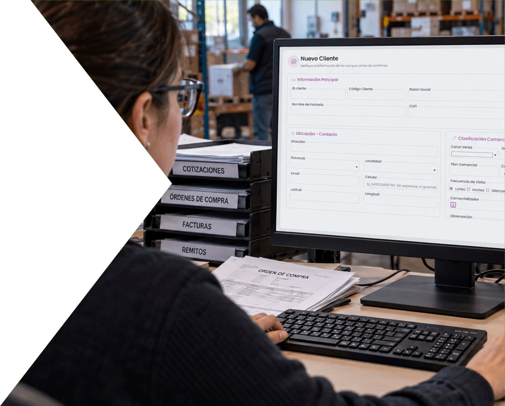

Información centralizada
Los datos importantes de cada proveedor, disponibles para todo el equipo en un mismo lugar.

Centralizá proveedores, compras, saldos y pagos para tener una visión clara de todo el circuito de abastecimiento.
Hablemos de tus comprasGLIX conecta la información comercial, administrativa y financiera de cada proveedor.
Comprá, controlá y pagá con más claridad.

Centralizá contactos, condiciones comerciales, historial y desempeño para tener la información que necesitás al momento de comprar.
Los datos importantes de cada proveedor, disponibles para todo el equipo en un mismo lugar.
Consultá las condiciones comerciales acordadas antes de tomar decisiones de compra.
Revisá antecedentes y desempeño para comparar proveedores con más información.
Mantené organizada la documentación de cada operación y seguí su impacto administrativo sin perder el contexto.
Conservá cada operación vinculada al proveedor y a su movimiento administrativo.
Registrá modificaciones manteniendo la trazabilidad de la operación original.
Los ajustes también quedan vinculados a la historia de cada compra.
Visualizá saldos y movimientos para entender los compromisos de la empresa con cada proveedor y administrar mejor los próximos pagos.
Conocé qué pagos están pendientes y mantené una visión clara de los compromisos asumidos.
Consultá la posición de cada proveedor con la información administrativa vinculada.
Organizá la autorización y documentación de los pagos para cerrar el circuito de compras con toda la información relacionada.
Gestioná las autorizaciones y mantené cada desembolso relacionado con su proveedor.
Integrá las retenciones correspondientes dentro del mismo proceso administrativo.
Generá la documentación necesaria para acompañar cada operación.
Prepará la información necesaria para continuar con los procesos fiscales de la empresa.
GLIX conecta proveedores, compras, saldos y pagos para que todo el circuito pueda gestionarse desde un mismo sistema.